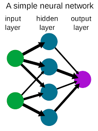

Joshua Li Mrs. Martinez Science 23 March 2021
There are two aspects to the background knowledge regarding this project: neural network and hieroglyph. First, the neural network, it is a form of AI algorithms and it essentially simulates how human brain cells process information. At its most basic form, it has three layers, input, hidden, and output. Each layer is composed of artificial neurons, a mathematical function conceived as a model of biological neurons. The artificial neuron receives one or more inputs and sums them to produce an output. Usually each input is separately weighted, and the sum is passed through a nonlinear function known as an activation function. Which processes the information and gives an output. In my case, I coded the activation function such that it adjusts its weight based on whether or not the output of the data is what I wanted(more in procedures). Second, why doodling? Or what am I gonna prove by testing a doodle classifier? Well, to understand that, let’s pretend the AI apprised, and you want to create a system of writing to communicate with other human, but any language base on the arrangement of letters have strong logic, which make them easily cracked by AI, but if your language is based on drawing of object,or hieroglyph, it might be a little difficult for the neural network to understand. That is the purpose of this experiment, to determine whether human creativity can be evaluated by cold-logic algorithms.
If I give my neural network enough data to train, it can classify over 95% of the data within the testing dataset, but it will not accurately understand what I draw 50% of the time.
Genesis 2:7, “ Then the Lord God formed a man from the dust of the ground and breathed into his nostrils the breath of life, and the man became a living being.” Genesis 1:26: Then God said, “Let us make mankind in our image, in our likeness, so that they may rule over the fish in the sea and the birds in the sky, over the livestock and all the wild animals,[a] and over all the creatures that move along the ground.” When God created the world, he made mankind his image and gave them the power to rule over every other being, furthermore, He gave humans a “breath of life”, or spirit. Nomatter how “superior” AI evolves to, it is , nonetheless, an object, it has no soul or life. We as humans have the power to know that there is an All-mighty God, and worship him, algorithms don’t, because pure logic cannot prove or disprove God.So in summary, we have a soul and spirit that allowed us to communicate with the creator of the universe, and that believe is what we as human have advantage over AI.